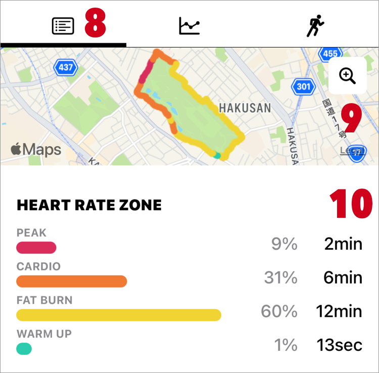
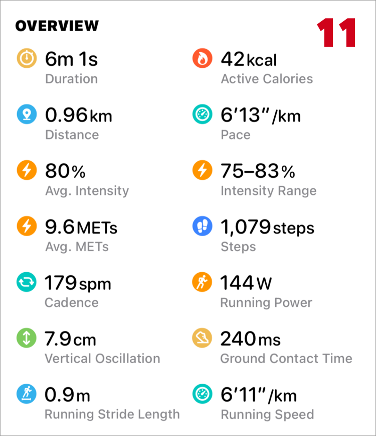

Help
Workout Detail
- 1. Edit
- It is displayed only in the workout recorded by Zones.
- 2. Delete
-
It is displayed only in the workout recorded by Zones.
Once deleted, data can not be restored. Please be careful. -
Workouts registered with other app can not be deleted. This is a limitation of iOS (HealthKit).
Please delete it with registered app or Apple's Health app. - 3. Share
- 4. Workout Date
- Date on which workout started.
- 5. Workout Time
- Workout start time - workout end time
- 6. Registered app (Source)
- 7. Workout Name
- If you have set a name in a custom workout, that name will be displayed.
Otherwise, the activity name is displayed. - 8. Route Map
- If route information was recorded, a tab will be displayed.
If route map does not Appear

- 9. Duration
- Workout duration excluding pause time.
- 10. Total Active Calories
- It is the total of calories consumed during workout.
If the values are very different, try Re-collect sample data. - 11. Total Distance
- It is the total distance traveled during workout.
If the values are very different, try Re-collect sample data. - 12. Speed
- It is the speed calculated from "9. Duration" and "11. Total Distance".
However, the calculation is different in the following cases.
If lap is registered by swimming, use the total time of lap instead of "9. Duration".
If segment is registered by downhill ski / snowboard, the average of the segment speed is displayed. - 13. 14. Average, Max-Min Exercise Intensity
- Exercise intensity calculated from the heart rate and Heart Rate Zone.
If there is no record of heart rate, -- will be displayed. - 15. 16. Average, Max-Min Heart Rate
- If there is no record of heart rate, -- will be displayed.
- 17. Recovery Heart Rate
- It is displayed if Recovery Heart Rate is recorded.
Please refer to Recovery Heart Rate.
- 18. Section
-
It is displayed when the section information is in the workout.
You can see detailed information such as distance and speed for each section.
In order to display the distance and speed in section, distance data must be attached to the workout.
(Distance data is attached to the workout measured by Zones app.) - There are the following types of section.
-
- a. Split
- It is section information per km(mile) units.
It displays if the total distance is 1 km (mile) or more.
If distance is not connected to workout, split details can not be displayed.
If laps are registered by swimming, it is not displayed. - b. Lap
-
It is similar to split, but lap is the information recorded on the workout at the time of measurement.
It is registered when pool swimming, you can see swimming style.
Apple Document: HKWorkoutEventTypeLap - c. Marker
-
The marker is information on a certain timing.
Zones does not support marker recording, but information registered with double tap in Apple's "Workout" app is displayed as a marker.
Apple Document: HKWorkoutEventTypeMarker - d. Segment
-
Segments are registered for swimming, Downhill skiing, Snowboarding etc.
Apple Document: HKWorkoutEventTypeSegment - e. Active/Pause
- It is displayed when there is a pause event.
"Active" represents out of pause period.
Apple Document: HKWorkoutEventTypePause
Apple Document: HKWorkoutEventTypeResume
-
Information other than split will be registered in workout.
You can see original data at the Workout Detail > Workout Events on Apple Health app.

- 19. Heart Rate
-
Displays the minimum - maximum heart rate during workout.
Tap the graph to display the heart rate at that point.
-
Heart rate will be obtained from iPhone's Health.
The color of the graph line changes according to the setting of the heart rate zone. - 20. Speed
-
Displays the average speed of the workout.
Tap the graph to display the speed at that point. -
Graph of speed is created from distance sample data.
If distance data is attached to the workout, that data will be displayed. If it is not attached, it will read data from Apple Health.
- 21. Active Line
- The part where the line under the graph is not drawn is the section paused (stopped).

- 22. Route Map Line Color
-
You can change the line color of the route map to the following by tapping on this area.
- Heart Rate Zone
- Speed
- Altitude (GPS Altitude)
- 23. Route Map Share